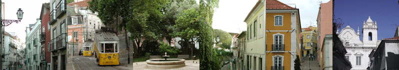

|
Descubra Lisboa e o Bairro Alto
|
DESCUBRA O BAIRRO ALTO
Bairro Alto O Bairro Alto data do século XVI, é um dos bairros mais antigos e típicos de Lisboa. De facto, o bairro foi construído em resposta ao bairro baixo que era muito mal ventilado e que era, consequentemente, um verdadeiro ninho de epidemias. O Bairro Alto, esse, encontra-se empoleirado na encosta de uma colina, numa zona muito ventilada e as ruas são orientadas em direcção aos ventos dominantes.
Igreja de São Roque
É obrigatório visitar a Igreja de São Roque. Esta igreja, construída pelos jesuítas no século XVI, é uma verdadeira obra-prima. O despojo da sua fachada contrasta com o refinamento da sua decoração interior e dos seus revestimentos em azulejos.
Os azulejos No Bairro Alto, como por todo o lado em Portugal, podemos admirar os azulejos: quadrados de faiança tradicionalmente pintadas em azul e branco. São os azulejos que dão a sua cor azul a Portugal. Podemos visitar o museu dos azulejos para aprender mais sobre esta arte de forma completa: E se quiser a minha opinião, o melhor fabricante de azulejos encontra-se no Bairro Alto.
O fado O fado é a música nacional de Portugal. O fadista é geralmente acompanhado por uma guitarra portuguesa e por uma viola. O Fado, é uma emoção que se canta e que lhe tocará o coração. Este canto melancólico fala de paixão, de amor impossível, de ciúme, de solidão, de nostalgia e de sofrimento. De Alfredo Marceneiro a Cristina Branco, passando por Amália Rodrigues, alguns intérpretes tiveram neste a sua grandiosidade. "Se o fado é a expressão mais autêntica da arte popular portuguesa, é porque se alimenta das próprias fontes da vida quotidiana, da dor, e da inquietude dos bairros pobres". Amália Rodrigues (Lisboa 1920-1999). Com as suas numerosas casas de fado, o Bairro Alto é o local ideal para escutar estes cantos tradicionais. Cada noite de fado é uma festa onde a canção tradicional e a cozinha são o evento principal. Venha ao nosso bairro para comer bacalhau ou chouriço ao som do fado.
| |
 De facto, o bairro foi sempre um bairro animado: primeiro burguês, depois local de eleição da prostituição, tornou-se agora um bairro comerciante meio popular meio associativo.
De facto, o bairro foi sempre um bairro animado: primeiro burguês, depois local de eleição da prostituição, tornou-se agora um bairro comerciante meio popular meio associativo.